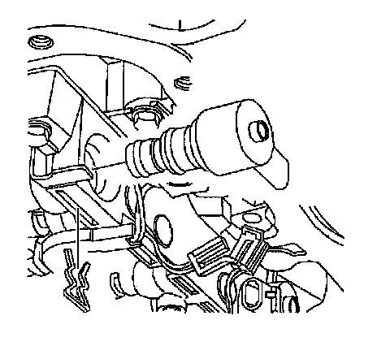
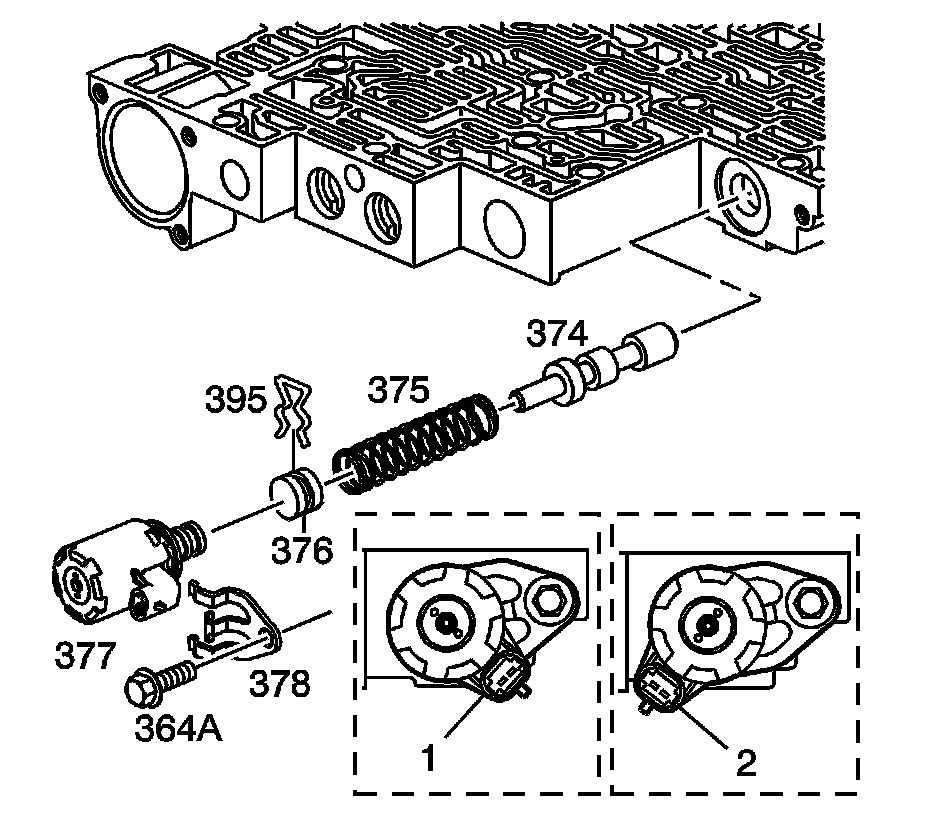
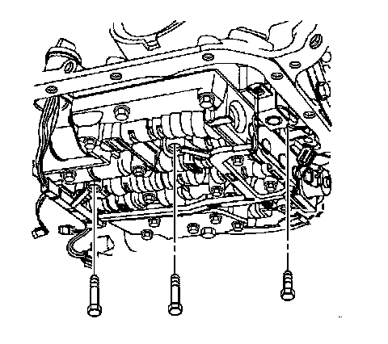
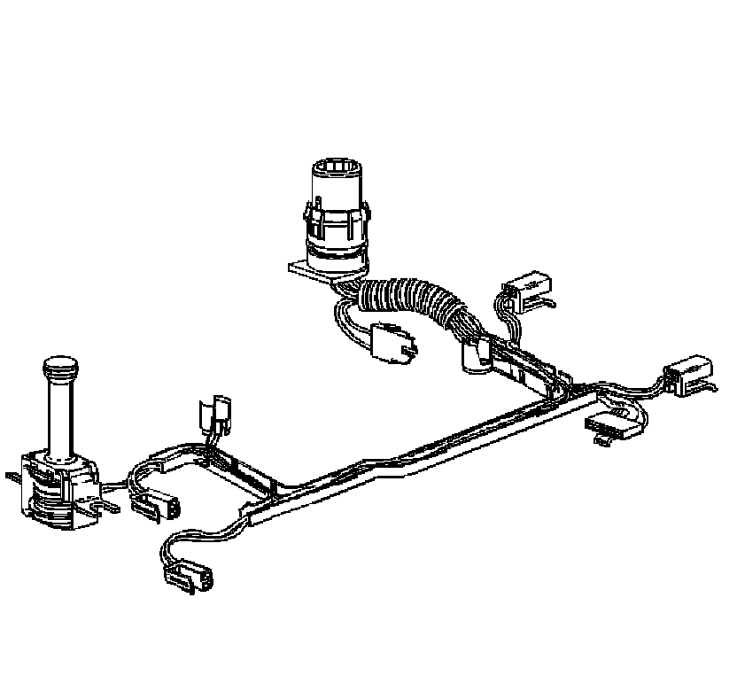

Torque Converter Clutch Solenoid: Service and Repair
Torque Converter Clutch Pulse Width Modulation Solenoid, Torque Converter Clutch Solenoid, and Wiring Harness
Tools Required
J 28458 Seal Protector Retainer Installer
Removal Procedure

1. Remove the transmission filter.
2. Disconnect the transmission harness 20-way connector (1) from the transmission internal harness pass-through connector.
Depress both tabs on the connector and pull straight up; do not pry the connector.
Important: Removal of the valve body is not necessary for the following procedure.
3. Remove the 1-2 accumulator. Do not remove the spacer plate.

4. Disconnect the internal wiring harness electrical connectors from the following components:
^ Transmission fluid pressure switch (1)
^ 1-2 shift control solenoid (2)
^ 2-3 shift control solenoid (3)
^ Pressure control solenoid (4)
^ Torque converter clutch pulse width modulation (TCC PWM) solenoid (5)
^ 3-2 control solenoid (6)

5. Remove the TCC PWM solenoid retainer.
6. Remove the TCC PWM solenoid in order to access one of the TCC solenoid bolts.

7. Remove the pressure control solenoid retainer bolt (364A) and retainer (378).
8. Remove the pressure control solenoid (377).

9. Remove the TCC solenoid bolts and the valve body bolts which retain the internal wiring harness.

10. Using J 28458, release the pass-through electrical connector from the transmission case.
1. Use the small end of the J 28458 over the top of the connector.
2. Twist in order to release the four tabs retaining the connector.
3. Pull the harness connector down through the transmission case.
11. Remove the TCC solenoid (with O-ring seal) and wiring harness.

12. Inspect the TCC solenoid and wiring harness for the following defects:
^ Damage
^ Cracked connectors
^ Exposed wires
^ Loose pins
Installation Procedure
1. Install the wiring harness and TCC solenoid with a new O-ring seal to the transmission.
2. Install the pass-through electrical connector to the transmission case.
Notice: Refer to Fastener Notice.
3. Install the valve body bolts which retain the internal wiring harness and install the TCC solenoid bolts.
^ Tighten the control valve body bolts to 11 N.m (97 lb in).
^ Tighten the TCC solenoid bolts to 11 N.m (97 lb in).
Notice: Be sure all solenoids are installed with the electrical connectors facing the non-machined (cast) side of the valve body; otherwise, the solenoids will bind against the transmission case as the valve body bolts are tightened and damage may occur.
Important: When installing the pressure control solenoid, the electrical connector must be in the position 1 shown. Do not use position 2.
4. Install the pressure control solenoid (377).
5. Install the pressure control solenoid retainer (378) and retainer bolt (364A).
Tighten the bolt to 11 N.m (97 lb in).
6. Install the TCC PWM solenoid to the control valve body.
7. Install the TCC PWM solenoid retainer.
8. Connect the internal wiring harness electrical connectors to the following components:
^ Transmission fluid pressure switch (1)
^ 1-2 shift control solenoid (2)
^ 2-3 shift control solenoid (3)
^ Pressure control solenoid (4)
^ TCC PWM solenoid (5)
^ 3-2 control solenoid (6)
9. Install the 1-2 accumulator.
10. Connect the transmission harness 20-way connector (1) to the transmission pass-through connector.
Align the arrows on each half of the connector and insert straight down.
11. Install the transmission filter.
Important: It is recommended that transmission adaptive pressure (TAP) information be reset.
Resetting the TAP values using a scan tool will erase all learned values in all cells. As a result, the engine control module (ECM), powertrain control module (PCM) or transmission control module (TCM) will need to relearn TAP values. Transmission performance may be affected as new TAP values are learned.
12. Reset the TAP values. Refer to Transmission Adaptive Functions (TCM).